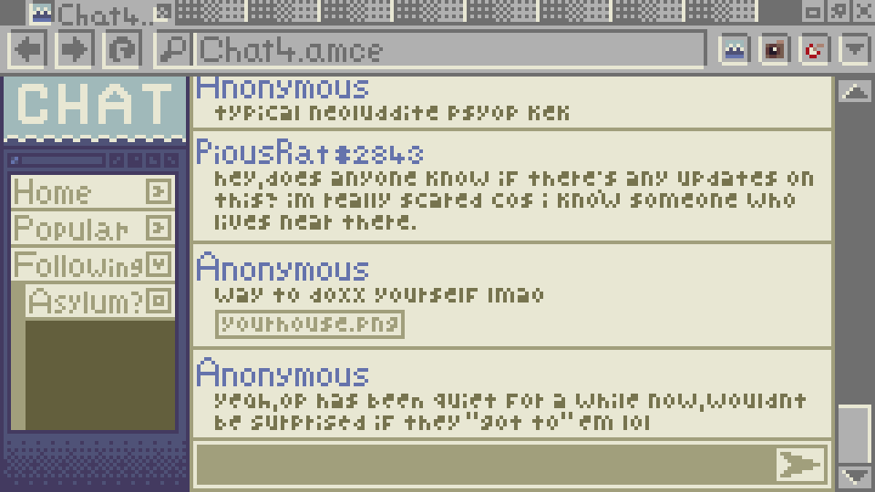
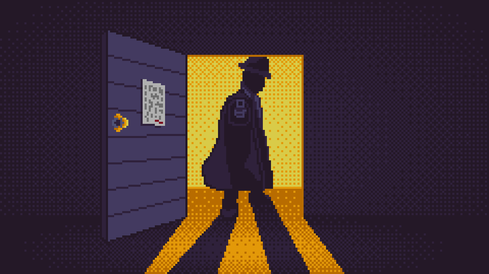
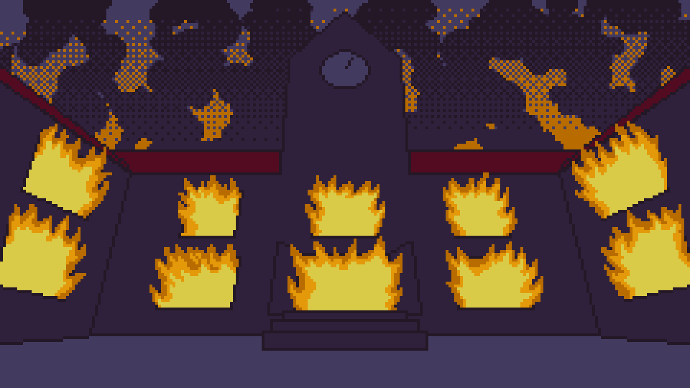
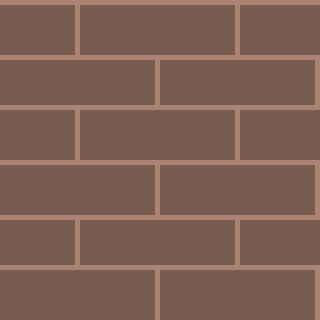
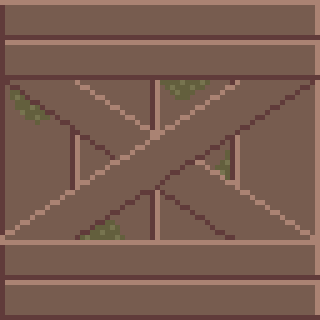
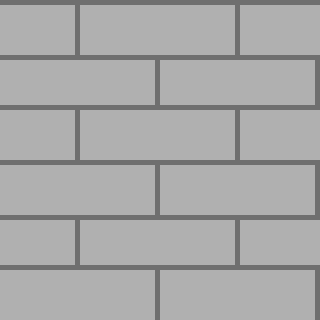
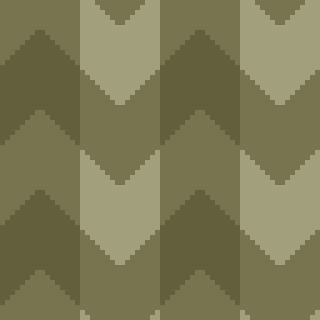
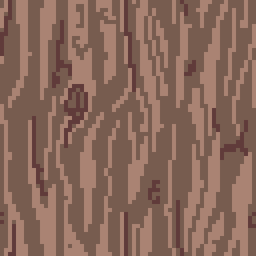
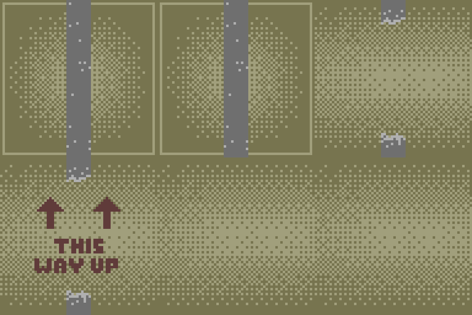

Artist — Game Designer — Developer
Artist — Game Designer — Developer
This game was made in a group of 4, for which I made most of the textures and cutscenes. The player character is a journalist following reports of missing people which led them to an abandoned asylum. They break in and find that the people are being experimented on, modified with technology that makes them sensitive to the light of the player's camera. There is a limited amount of shots the player can take, however, and they must also take photos of specific pieces of evidence to get the correct endings. The game is short enough to get all endings within an hour.
Endings
Here are the three separate endings I made for the game, depending on the amount of evidence the player collected in their playthrough.



Textures
I made textures for different walls and objects in the asylum.





